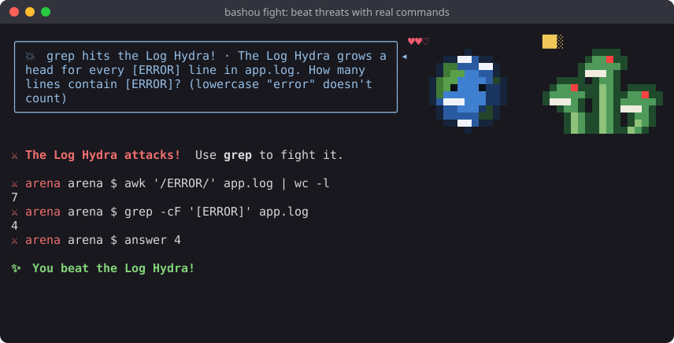

Bashou is a free, open source way to learn the Linux command line and bash scripting, for beginners and beyond. It's a terminal pet: a little pixel-art pet lives in the corner of your terminal and grows as you use real commands, gives you tips, and explains what each command does. It runs offline, with no account and no AI.
Source code and guide: github.com/IAmAStealer/Bashou (MIT license).

grep, find, pipes, awk and sed,
permissions, processes, disks, archives, packages with apt and dnf, systemd services.$( ), loops, set -euo pipefail.bashou learn <command> takes any command apart and explains each option.bashou spot, to recognise an IPv6 address, a hash or base64 at a glance.
sudo install -dm755 /etc/apt/keyrings sudo curl -fsSLo /etc/apt/keyrings/bashou.asc https://iamastealer.github.io/Bashou/bashou.asc printf '%s\n' 'Types: deb' 'URIs: https://iamastealer.github.io/Bashou/deb/' 'Suites: ./' \ 'Signed-By: /etc/apt/keyrings/bashou.asc' | sudo tee /etc/apt/sources.list.d/bashou.sources sudo apt update && sudo apt install bashou
sudo curl -fsSLo /etc/yum.repos.d/bashou.repo https://iamastealer.github.io/Bashou/bashou.repo sudo dnf install bashou
bashou on
The first time, it adds one line to your ~/.bashrc. Updates come with the rest of the system
(apt upgrade, dnf upgrade). Packages and repository data are signed with the
Bashou key: apt and dnf refuse anything else. Any other Linux: install with git, see the
README.
Bashou collects nothing: no account, no telemetry, no ads. It counts the tools you use, keeps those counters in your home folder and never sends them anywhere.